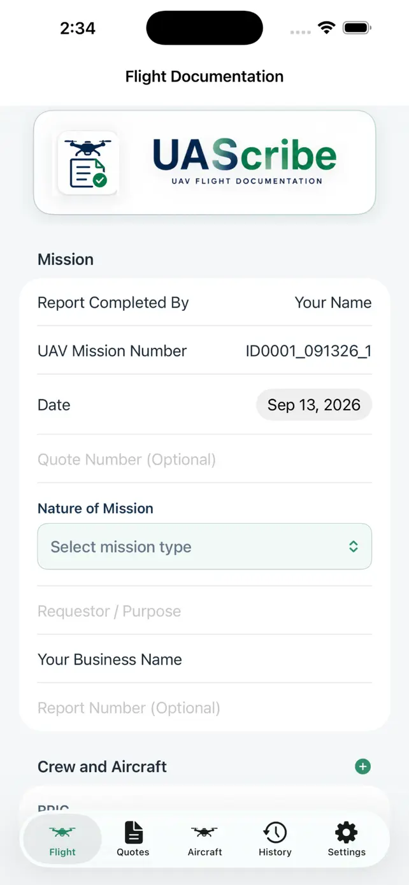

No account required
Start documenting your work without creating a UAScribe account.
DRONE QUOTES & FLIGHT RECORDS
Without the monthly subscription.
Create quotes, document flights, and share or print branded PDF reports. Your saved records stay on your iPhone or iPad.
Try 3 reports for free.
One-time Pro unlock. No subscription.
For iPhone & iPad · No account required

Scan to download
on iPhone

ONE CONNECTED WORKFLOW
UAScribe keeps the business side and the flight record together without turning a solo operation into an enterprise system.
Build a clear customer quote with reusable services and saved pricing.
Explore quotes → 02 / DOCUMENTRecord the mission, aircraft, RPIC, crew, conditions, preflight, and flight details.
Explore flight reports → 03 / DELIVERCreate a branded PDF and optionally include the linked quote in the same PDF.
See PDF reporting →BUILT FOR THE FIELD
UAScribe supports documentation. Airspace and weather information remain informational and do not grant authorization or replace the pilot’s preflight responsibilities.

YOUR DATA STAYS YOURS
Your saved quotes, flight records, and aircraft maintenance records stay on the device where you create them. UAScribe does not upload those records to a developer-operated cloud database.
Start documenting your work without creating a UAScribe account.
Choose when to save, share, or print a completed report—and who receives it.
Your business and flight history remain on your device. Save copies of important reports where you choose.
Requested location, weather, and airspace lookups use online services. Device backups and any services you choose for sharing have their own privacy practices. This website uses Google Analytics; the iOS app does not include third-party analytics SDKs. Read the privacy policy.
FOR INDEPENDENT PILOTS & SMALL TEAMS
No UAScribe account is required. Your saved business and flight records stay on your device, with no developer-operated cloud database receiving them.
Add your organization name and logo to the finished mission report you share.
Try 3 reports for free, then create unlimited reports with a one-time Pro unlock. No monthly subscription.
FLIGHT RECORDS FOR YOUR WORKFLOW
Explore the drone logbook and PDF reporting features, or see a flight documentation workflow for Part 107 pilots.
COMMON QUESTIONS
No. UAScribe is a professional documentation and quote-building app. It does not control your aircraft or grant airspace authorization.
No UAScribe account is required, and there is no monthly subscription. Saved records are stored locally on the device where you create them.
Yes. UAScribe is designed for both iPhone and iPad, including landscape use when completing forms with a larger screen or keyboard.
You can create and share 3 mission reports for free before deciding whether to purchase the one-time Pro unlock.
FROM FIRST QUOTE TO FINAL REPORT
UAScribe is available on the App Store for iPhone and iPad. Try 3 reports for free, then create unlimited reports with a one-time Pro unlock.